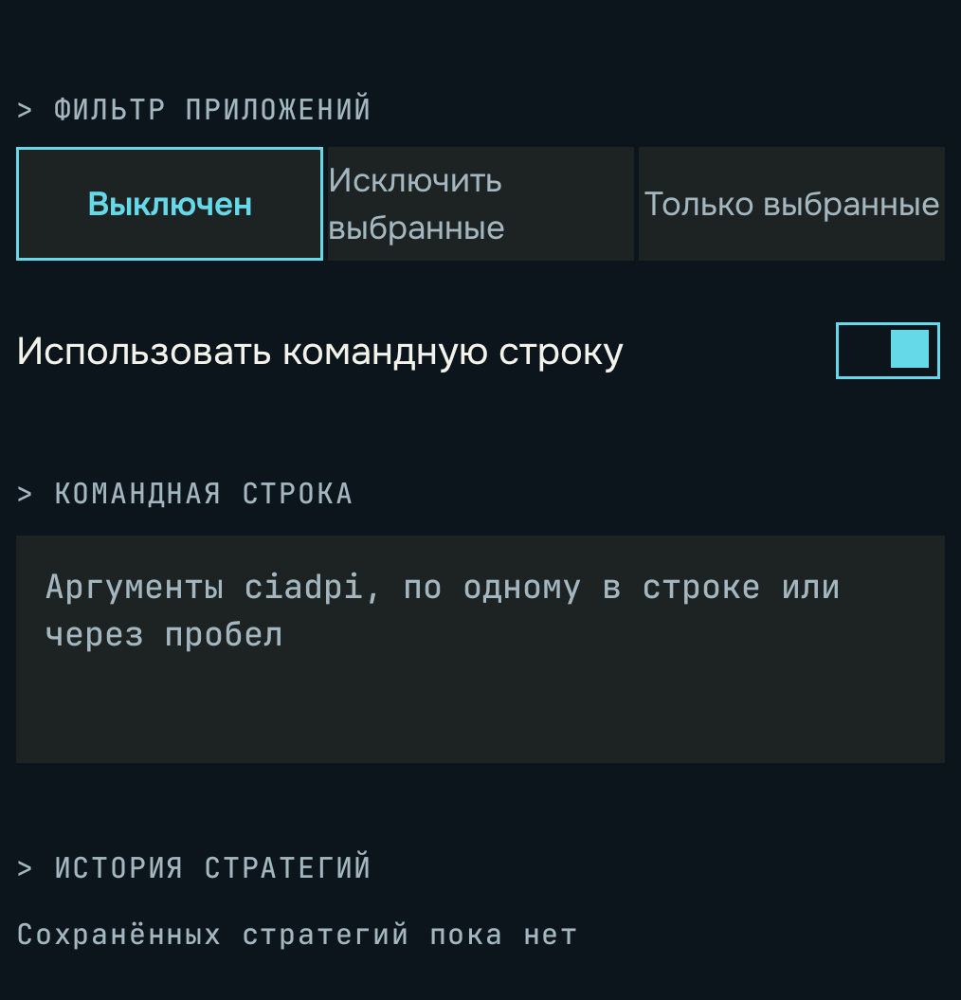

ByeBye TGWS Proxy
Настройки ByeByeDPI
Фильтр приложений
и стратегии
В расширенных настройках можно выбрать приложения, передать аргументы ciadpi и открыть историю стратегий.

Настройки ByeByeDPI
В расширенных настройках можно выбрать приложения, передать аргументы ciadpi и открыть историю стратегий.
